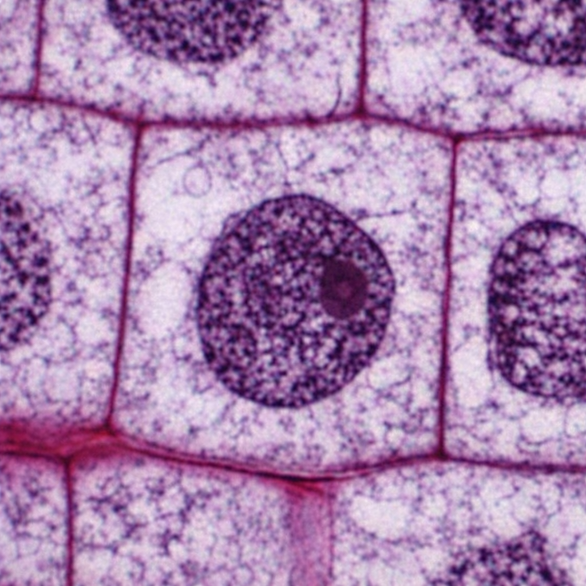
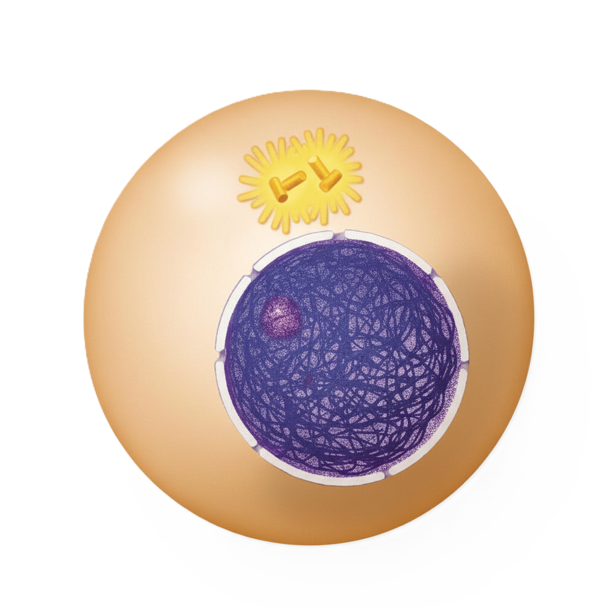
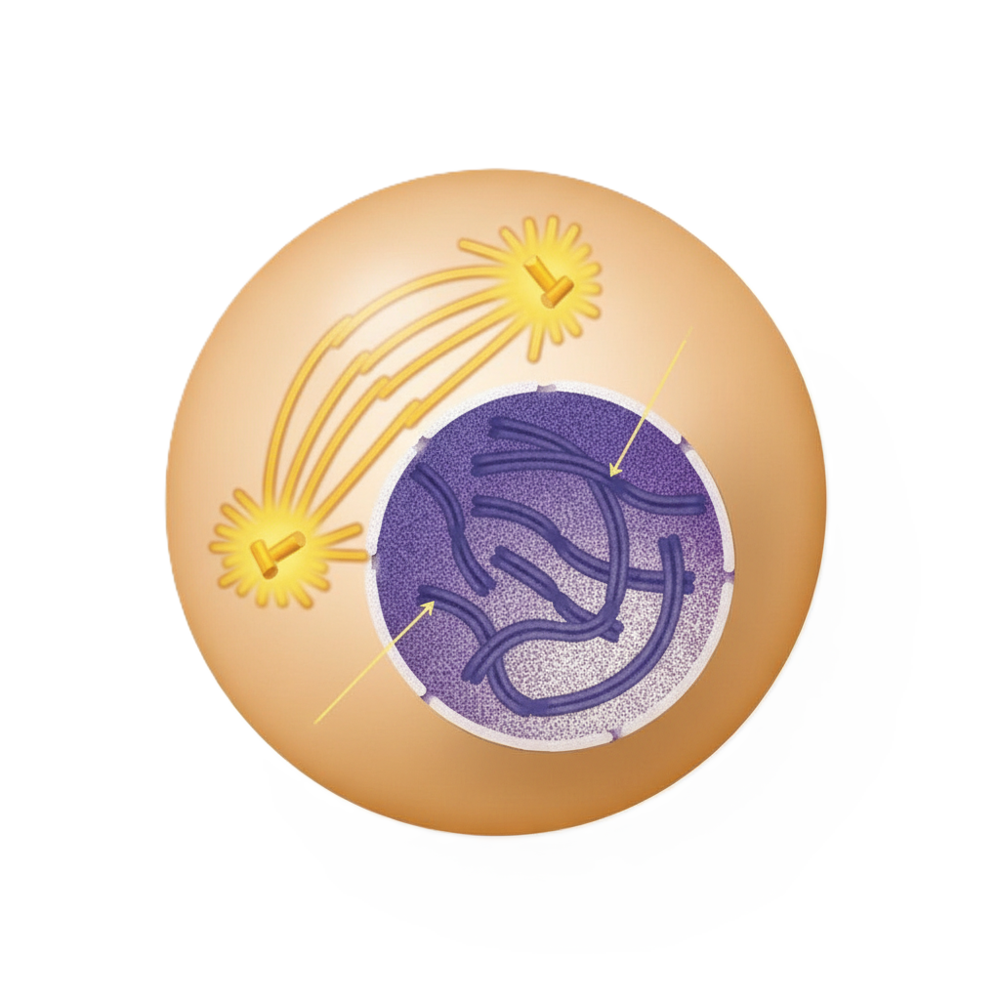

🎯 Understanding DNA Nomenclature Across the Cell Cycle
DNA structure undergoes dramatic changes throughout the cell cycle, each phase characterized by specific terminology that reflects its physical state, replication status, and functional role. This expert guide provides authoritative insights into DNA naming conventions with authentic microscopy, detailed schematics, and professional terminology explanations.
📖 Learning Objectives
- Identify DNA structural states in each cell cycle phase
- Apply correct terminology based on DNA organization
- Understand the relationship between structure and function
- Recognize key transitions in chromosomal condensation
Interphase - G1 Phase (Gap 1)
Pre-Replication State
🖼️ Microscope Image

🔬 Artist Rendition

🧬 Chromatin Organization
📚 DNA Terminology Matrix
Chromatin
DNA + histone protein complex in an uncondensed, transcriptionally active state.
Maintains 10nm fiber organization suitable for gene expression.
Uncondensed Chromosome
Emphasizes extended, uncondensed nature of individual chromosomes. DNA remains in
relaxed conformation for accessibility to transcription machinery.
Single Chromosome
Each chromosome consists of one DNA molecule (one chromatid). Chromosome number =
2n, DNA content = 2C (diploid complement).
Nucleosome Fiber
Primary structural unit: 147bp DNA wrapped around histone octamer core. Forms
repeating "beads on a string" visible in electron microscopy.
🎯 Key Structural Features
DNA State: Unreplicated, uncondensed
Chromosome Count: 2n (diploid)
DNA Content: 2C
Visualization: Diffuse nuclear staining
Function: Transcription, growth
Interphase - S Phase (Synthesis)
DNA Replication
🖼️ Phase Overview

S Phase Overview - DNA synthesis and chromosome duplication.
Scale: 10μm
Source: Interphase Reference
🔬 Replication Factories

Active DNA Replication - EdU labeling shows replication foci
throughout nucleus.
Scale: 5μm
Stain: EdU (replication sites)
🧬 Sister Chromatid Formation
📚 DNA Terminology Matrix
Replicated Chromatin
Chromatin containing two identical DNA molecules (sister chromatids) per chromosome.
Maintains uncondensed state while doubling DNA content.
Replicated Chromosome
Each chromosome now consists of two sister chromatids joined at centromere.
Structure remains uncondensed despite replication completion.
Sister Chromatids
Identical DNA molecules produced by semi-conservative replication, held together by
cohesin complexes at centromere until anaphase.
Replication Foci
Localized sites of DNA synthesis containing multiple replication forks. Visualized
as discrete nuclear spots in microscopy.
🎯 Key Structural Features
DNA State: Actively replicating
Chromosome Count: 2n (but replicated)
DNA Content: 2C → 4C
Cohesion: Cohesin loading
Function: DNA synthesis
Interphase - G2 Phase (Gap 2)
Pre-Mitotic Checkpoint
🖼️ Phase Overview
G2 Phase Overview - Cell preparation and checkpoint before mitosis.
Scale: 10μm
Source: Interphase Reference
🔬 Pre-Mitotic Nucleus

G2 Phase Preparation - Nucleus remains intact with replicated DNA,
preparing for mitosis.
Scale: 10μm
Stain: Lamin B1 (nuclear envelope)
🧬 Replicated Chromosome Array
📚 DNA Terminology Matrix
Replicated Chromatin
DNA remains in chromatin state but with complete replication. Sister chromatids held
together by cohesin complexes, ready for condensation.
Sister Chromatid Pairs
Each chromosome consists of tightly associated sister chromatids. Cohesin rings
maintain cohesion until anaphase separation signal.
Pre-Condensation Chromatin
Chromatin poised for mitotic condensation. Histone modifications begin preparing for
chromosome compaction.
🎯 Key Structural Features
DNA State: Replicated, uncondensed
DNA Content: 4C (tetraploid DNA)
Nuclear Status: Intact envelope
Checkpoint: G2/M verification
Function: Growth, preparation
Mitosis - Prophase
Chromosome Condensation
🖼️ Phase Overview
Prophase Overview - Chromosome condensation and spindle formation
begin.
Scale: 10μm
Source: Mitosis Reference
🔬 Early Mitotic Chromosomes

Chromosome Condensation - Chromosomes becoming visible as distinct
threads.
Scale: 5μm
Stain: Hoechst (DNA)
🧬 Chromosome Compaction
📚 DNA Terminology Matrix
Condensing Chromosomes
Chromosomes actively compacting from chromatin to mitotic chromosomes. Condensin
complexes drive progressive compaction.
Mitotic Chromosomes
Chromosomes becoming visible under light microscope. Characteristic X-shape emerges
as sister chromatids condense together.
Replicated Chromosome
Each chromosome consists of two sister chromatids. Replication completed in S phase;
cohesion maintained despite condensation.
Prophase Chromosomes
Specifically refers to chromosomes in prophase condensation state. Nuclear envelope
still partially intact.
🎯 Key Structural Features
Condensation: Progressive compaction
Visibility: Chromosomes become visible
Spindle: Microtubule assembly begins
Nuclear Envelope: Starts breaking down
Function: Chromosome preparation
Mitosis - Metaphase
Chromosome Alignment
🖼️ Phase Overview
Metaphase Overview - Chromosome alignment at the metaphase plate.
Scale: 10μm
Source: Mitosis Reference
🔬 Metaphase Plate

Metaphase Alignment - Chromosomes maximally condensed and aligned.
Scale: 5μm
Stain: DAPI (DNA), tubulin (spindle)
🧬 Chromosome-Spindle Interface
📚 DNA Terminology Matrix
Metaphase Chromosomes
Chromosomes at peak condensation, aligned at metaphase plate. Characteristic shape
allows easy identification and karyotyping.
Kinetochore-Bound Chromosomes
Chromosomes attached to spindle microtubules via kinetochores. Proper bipolar
attachment essential for accurate segregation.
Sister Chromatid Pairs
Each chromosome consists of two chromatids held together until anaphase. Cohesin
resistance counteracts spindle forces.
🎯 Key Structural Features
Alignment: Metaphase plate
Attachment: Bipolar kinetochore
Tension: Sister chromatid cohesion
Checkpoint: Spindle assembly
Function: Chromosome positioning
Mitosis - Anaphase
Chromatid Separation
🖼️ Phase Overview
Anaphase Overview - Sister chromatid separation and movement to poles.
Scale: 10μm
Source: Mitosis Reference
🔬 Chromatid Separation

Anaphase Movement - Sister chromatids separate and move toward
spindle poles.
Scale: 5μm
Stain: DAPI (DNA)
🧬 Chromatid Segregation
📚 DNA Terminology Matrix
Daughter Chromosomes
Following sister chromatid separation, each chromatid becomes an individual
chromosome moving toward opposite poles.
Separating Chromosomes
Chromosomes actively moving apart. Maintain condensed state during movement via
microtubule depolymerization.
Single Chromosomes
Each DNA molecule now functions as independent chromosome. Chromosome count
temporarily doubles (4n) before cytokinesis.
🎯 Key Structural Features
Separation: Sister chromatid split
Movement: Poleward chromosome migration
Enzyme: Separase activation
Cohesion: Cleaved by separase
Function: Chromosome segregation
Mitosis - Telophase
Nuclear Reformation
🖼️ Phase Overview
Telophase Overview - Nuclear envelope reformation and chromosome
decondensation.
Scale: 10μm
Source: Mitosis Reference
🔬 Nuclear Reformation
Nuclear Reformation - Chromosomes decondense as nuclear envelopes
reform.
Scale: 10μm
Stain: Lamin B1 (nuclear envelope)
🧬 Chromatin Reformation
📚 DNA Terminology Matrix
Decondensing Chromatin
Chromosomes actively returning to chromatin state. Histone deacetylation and other
modifications facilitate decompaction.
Post-Mitotic Chromatin
Chromatin in newly formed nuclei. Transcription machinery reassembles as chromatin
returns to interphase configuration.
Daughter Nuclei Chromatin
Chromatin organized into two separate nuclei. Each nucleus contains complete diploid
chromosome set (2n).
🎯 Key Structural Features
Decondensation: Chromosome relaxation
Nuclear Reformation: Envelope reassembly
Chromosome Count: Returns to 2n per nucleus
Cytokinesis: Cell division completion
Function: Return to interphase
🧪 Interactive Knowledge Check
Question: During which phase does DNA transition from being called "sister chromatids" to "daughter chromosomes"?